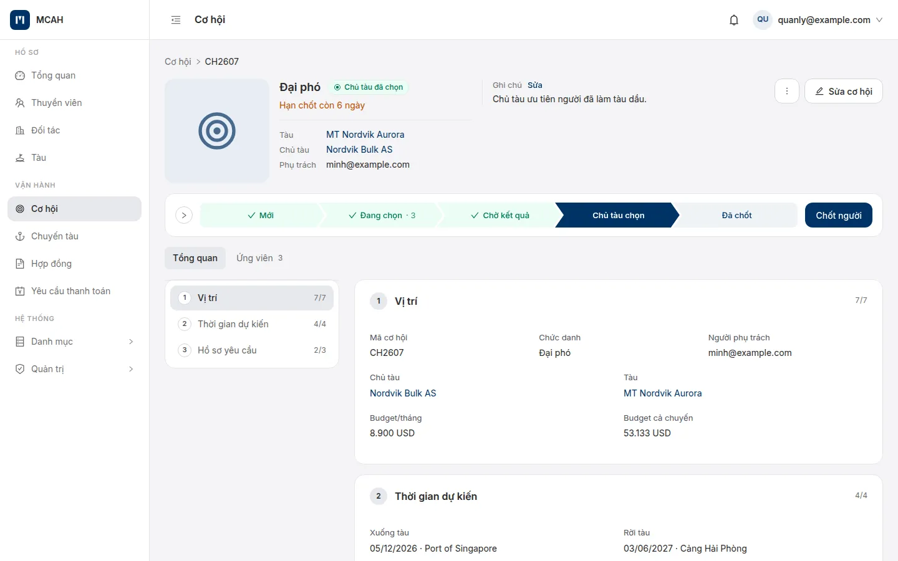
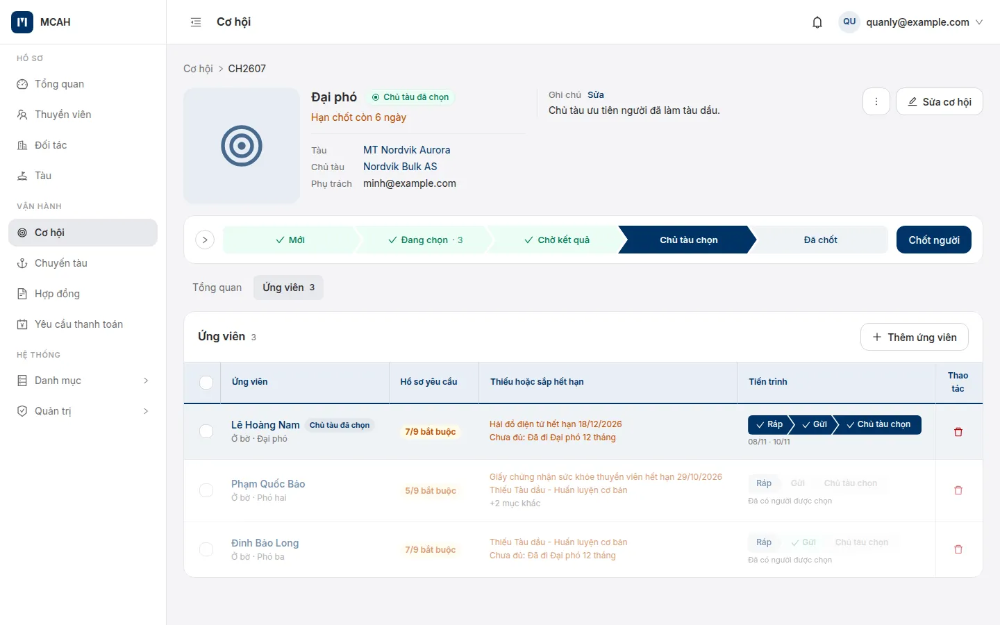

Cơ hội
Vị trí chủ tàu cần người: hồ sơ yêu cầu, thêm ứng viên, chủ tàu chọn và chốt người.
Mỗi cơ hội là một vị trí chủ tàu cần người. Chủ tàu cần 6 người cho một tàu thì có 6 cơ hội. Cơ hội có chủ tàu, tàu (chưa rõ cũng được), chức danh, budget theo tháng hoặc cả chuyến, ngày và nơi xuống / rời tàu dự kiến, hạn chốt, người phụ trách.

Hồ sơ yêu cầu
Mỗi cơ hội có danh sách thứ ứng viên phải có, chia ba khối: Giấy tờ, Biểu mẫu, Kinh nghiệm (số tháng ở chức danh, số chuyến trên loại tàu). Mỗi mục là Bắt buộc hoặc Nên có, kèm mốc phải còn hạn tới: ngày xuống tàu, ngày rời tàu, ngày rời cộng thêm n tháng, hoặc chỉ cần có. Khi tạo cơ hội, hồ sơ yêu cầu được điền sẵn theo tàu và chức danh.
Thêm ứng viên
Thêm ứng viên mở bảng chọn với bộ lọc đề xuất bật sẵn: đủ giấy bắt buộc, từng làm cho chủ tàu này, rảnh trước ngày, chức danh, loại tàu, quốc tịch, tuổi. Mỗi người có thẻ Hồ sơ (đủ / thiếu giấy, giấy thiếu ở tooltip), Bận và lý do ngắn như "2 chuyến với chủ tàu X".

Chủ tàu chọn và chốt người
- Kết quả chủ tàu báo ngoài hệ thống. Bạn gắn nhãn Chủ tàu đã chọn cho một ứng viên để giữ chỗ; các dòng khác mờ đi cho tới khi bỏ nhãn.
- Chốt người: chọn ứng viên, nhập ngày và nơi xuống tàu (không được sau hôm nay). App tạo chuyến Đang trên tàu, tạo hợp đồng nháp, đánh dấu cơ hội Đã chốt và các ứng viên còn lại "Không được chọn".
- Cơ hội không thành thì đóng với lý do (Không thành hoặc Huỷ); mở lại được. Menu ⋮ có Nhân bản và Xoá.
Hạn chốt còn 7 ngày trở xuống hiện nhãn Còn n ngày; đã qua hạn hiện Quá n ngày.